Systèmes d'exploitation
Gestion des processus et des threads
3A - Cursus Ingénieurs
CentraleSupelec
2023/2024

Définitions
- Un programme informatique : une suite statique d’instructions.
- Un processeur : un automate (électronique) de traitement.
- Il peut exécuter un programme
- Il modifie son état en fonction des instructions
- Un processus : un programme exécuté par un processeur.
- capte le caractère dynamique d’un programme.
Programme vs Processus
- Un processus : un programme exécuté par un processeur.
- capte le caractère dynamique d’un programme.
- Un programme peut donner naissance à plusieurs processus.
- Un processus est forcément créé par un autre processus (le système d'exploitation par exemple)
Exemples de processus
- Logiciel de traitement de texte
- Compilation de code source
- Tâche système (envoi de données vers l'imprimante)
Processus
- Dans un OS moderne, plusieurs processus s'exécutent en parallèle :
- Les processus de l'OS (gestion du réseau, gestion des utilisateurs, ...)
- Le shell (toute l'interface graphique $\rightarrow$ plusieurs processus).
- L'IDE VSCode avec lequel je tape ce cours.
- Le navigateur Chrome qui me permet de visualiser ce cours.
Rôle de l'OS
- Création et suppression de processus
- Programme $\rightarrow$ processus
- Munir le programme des informations nécessaires pour son exécution
- Suspension et reprise
- Multiprogrammation $\rightarrow$ interrompre et reprendre les processus
- Gestion de la mémoire où sont stockées les processus interrompus
- Communication et synchronisation
- Partage de données entre plusieurs processus
- Consistance de l'état de la mémoire
Rôle de l'OS
- Création et suppression de processus
- Programme $\rightarrow$ processus
- Munir le programme des informations nécessaires pour son exécution
- Suspension et reprise
- Multiprogrammation $\rightarrow$ interrompre et reprendre les processus
- Gestion de la mémoire où sont stockées les processus interrompus
- Communication et synchronisation
- Partage de données entre plusieurs processus
- Consistance de l'état de la mémoire
Création de processus
Rappel :
un processus est forcément créé par un autre processus
-
Sous UNIX $\rightarrow$ 2 appels système
forkpour créer un processus à partir du processus courant- le processus courant est dupliqué
execpour remplacer le processus courant par un autre processus
-
Sous WINDOWS
createprocesspour créer un processus (cf.execUnix)- le processus courant est conservé
L'espace mémoire d'un processus
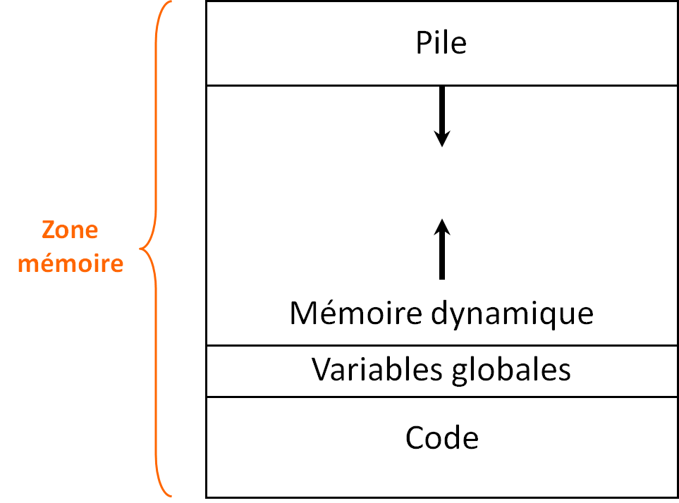
- Code exécutable en lecture seule
(taille connue) - Variables/Constantes globales
(taille connue) - Pile pour gérer les contextes et les variables temporaires (taille inconnue)
- Le TAS ou la Zone d'allocation dynamique de mémoire (taille inconnue)
Bloc de contrôle de Processus
-
Process Control Block - PCB
- Structure de données contenant les informations relatives à un processus utilisée par l’OS pour la gestion des processus.

- Information mémoire
- Données d'ordonnancement
- Périphériques alloués
- Information d'usage
- État du processus/processeur
Tout ce qui doit être sauvegardé
pour interrompre puis
reprendre l'exécution d'un processus.
Rôle de l'OS
- Création et suppression de processus
- Programme $\rightarrow$ processus
- Munir le programme des informations nécessaires pour son exécution
- Suspension et reprise
- Multiprogrammation $\rightarrow$ interrompre et reprendre les processus
- Gestion de la mémoire où sont stockées les processus interrompus
- Communication et synchronisation
- Partage de données entre plusieurs processus
- Consistance de l'état de la mémoire
Cycle de vie du processus
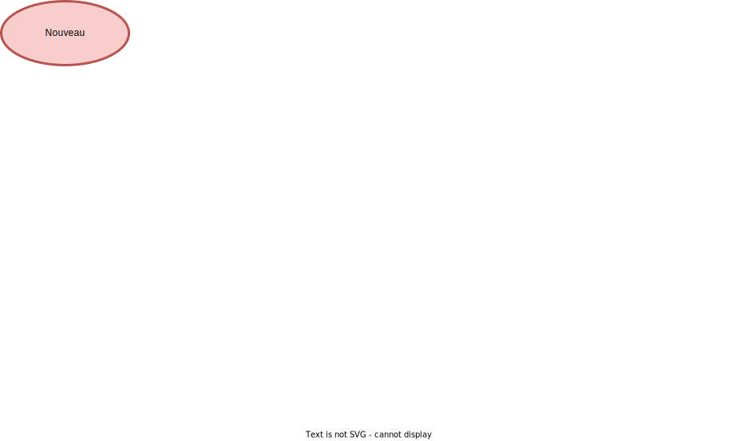
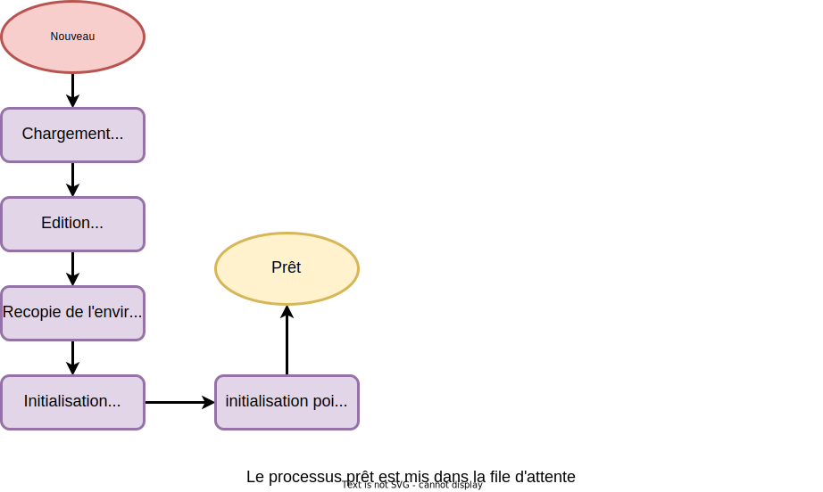
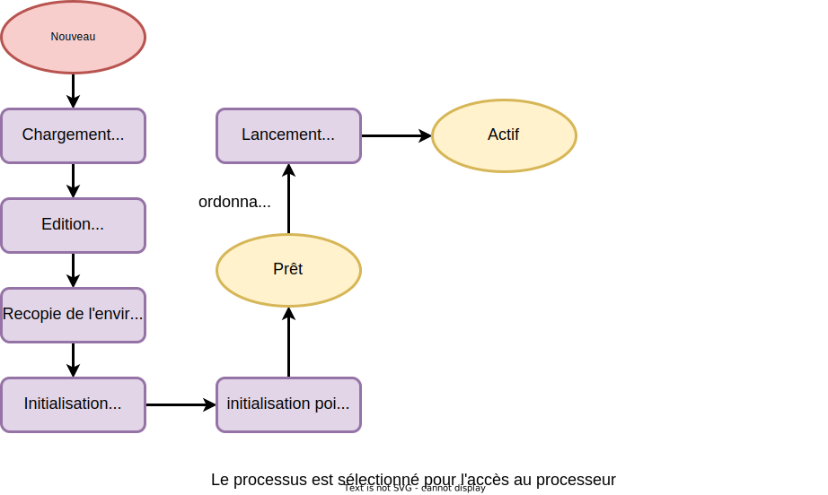
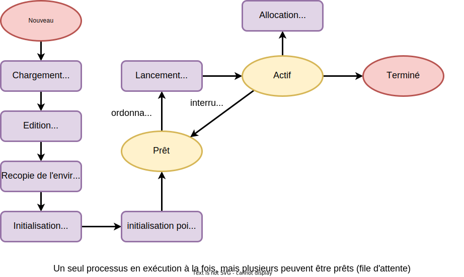
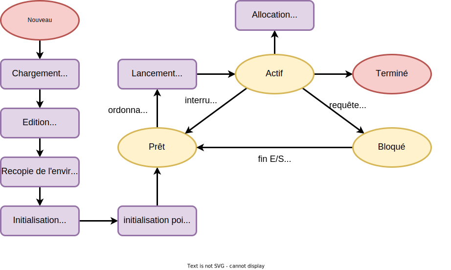
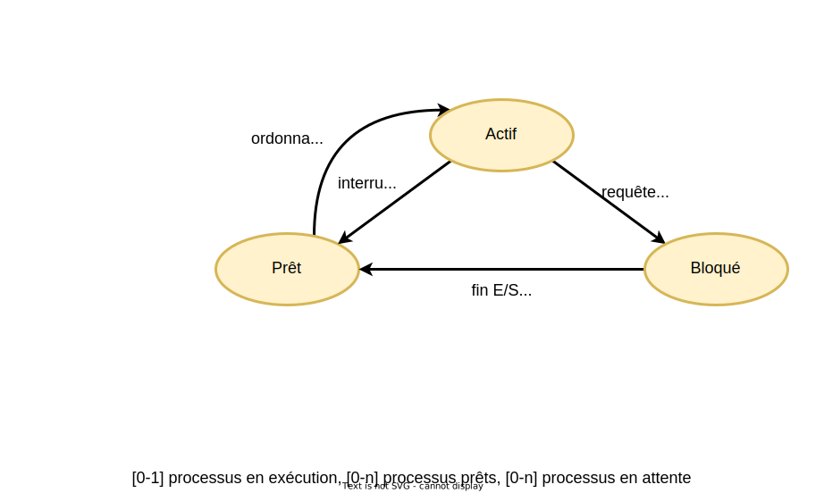
Suspension de l'exécution
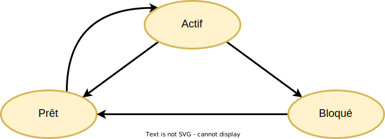
- Le processus en exécution laisse
la main si:- son quantum a expiré $\rightarrow$ Prêt
- crée un processus fils $\rightarrow$ Prêt
- fait une demande d'E/S $\rightarrow$ Bloqué
- exécute
wait$\rightarrow$ Bloqué
Commutation de processus
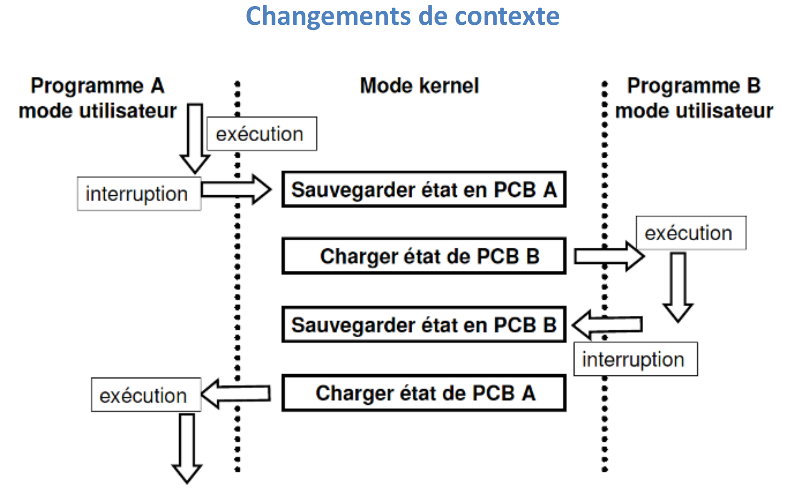Rôle de l'OS
- Création et suppression de processus
- Programme $\rightarrow$ processus
- Munir le programme des informations nécessaires pour son exécution
- Suspension et reprise
- Multiprogrammation $\rightarrow$ interrompre et reprendre les processus
- Gestion de la mémoire où sont stockées les processus interrompus
- Communication et synchronisation
- Partage de données entre plusieurs processus
- Consistance de l'état de la mémoire
Actions de l'OS
-
Mémoire: chaque processus a son propre espace mémoire
- pas de problème de consistance mémoire/processeur
-
Verrous: un processus peut verrouiller l'accès à une ressource
- file d'attente pour l'accès à la ressource
-
Outils et Algorithmes de synchronisation
- voir cours Synchronisation des processus
Notion de Thread
- Un thread est l'unité
d’exécution de base d'un processus, décrite par son point d’exécution et son état
interne (registres, pile, ...).
- les threads partagent le même code et les mêmes données
- chaque thread a sa propre pile
- un processus peut avoir plusieurs threads
- Un thread partage l’espace mémoire du processus qui l’a créé.
- Un thread est également appelé processus léger.
Notion de Thread
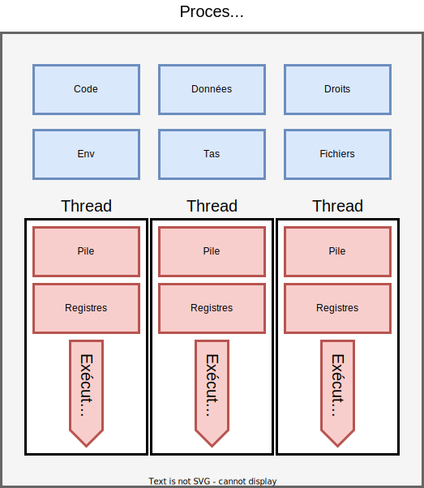Utilisation des Threads
- Le Thread permet la gestion de plusieurs traitements
en parallèle dans le même processus.- passage de ressources entre threads facilité.
- les variables sont dans le contexte du même processus.
-
Performances améliorées par rapport aux processus :
- création plus rapide;
- changement de contexte plus rapide;
- partage du code $\to$ gain de place en mémoire;
- réactivité $\to$ le processus s’exécute pendant qu’un thread est en attente.
Multiprogrammation
et temps partagé
- Les processus sont répartis sur les ressources :
- Plusieurs processus peuvent vouloir la même ressource en même temps
- File d'attente de PCB
- Choisir un processus parmi tous les processus dans la file d'attente
- Exemple
- le processeur est une ressource hautement critique.
- l’OS est en charge de sa répartition entre les processus
- l’ordonnancement (scheduling).
Ordonnancement
-
On ne s'intéresse pas à la durée totale du processus ...
mais au temps pendant lequel il va garder le processeur :- jusqu'à ce qu'il termine
- jusqu'à ce qu'il fasse une E/S
- jusqu'à ce que l'OS décide que ce n'est plus son tour
- Le remplacement d'un processus en exécution a un coût
(commutation de contexte)
- exécution de la routine d'ordonnancement
- sauvegarde du contexte (registres + PC)
- chargement d'un nouveau contexte
Objectifs possibles
de l’ordonnancement
- être équitable (fairness) vis-à-vis des processus ;
- maximiser l’utilisation globale du processeur (efficace) ;
- avoir un comportement le plus prévisible possible ;
- permettre un maximum d'utilisateurs interactifs (réactif) ;
- minimiser le surcoût (overhead) lier à la parallélisation ;
- assurer une utilisation maximale des ressources ;
- gérer convenablement les priorités.
Objectifs possibles
de l’ordonnancement
Objectif :
choisir un algorithme d'ordonnancement qui minimise
ou maximise un critère.
ou maximise un critère.
Taux d'utilisation
Proportion de temps pendant lequel la ressource (le CPU)
est utilisée
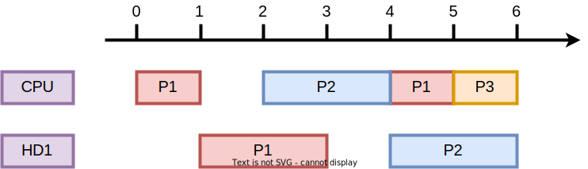
$taux=\frac{5}{6}=83\%$ $\rightarrow$ à maximiser
Débit
Nombre moyen de processus traités par unité de temps
$nb=\frac{3}{6}=0.5$ $\rightarrow$ à maximiser
Temps d'attente
Temps total passé par tous les processus dans la file prêt
$moyenne=\frac{1+2+5}{3}=2.66$ $\rightarrow$ à minimiser
Rotation
Durée d'un processus: $date$ $terminaison$ $-$ $date$ $creation$
$\rightarrow$ temps de réponse du processus
$moyenne=\frac{5+6+6}{3}=5.66$ $\rightarrow$ à minimiser
Ordonnancement
préemptif vs non préemptif
- Ordonnancement non préemptif $\to$ après avoir donné le
contrôle
à un processus, l'OS ne peut pas l'interrompre- sauf si en attente d’une ressource
-
Ordonnancement préemptif (avec réquisition) $\to$ l'OS peut interrompre un processus si :
- le quantum (le temps d’utilisation maximum consécutif) est atteint
- un processus plus prioritaire demande d'utiliser le processeur
-
L’ordonnancement préemptif est indispensable pour gérer
des systèmes temps réel ou des systèmes interactifs.
Ordonnancement non préemptif
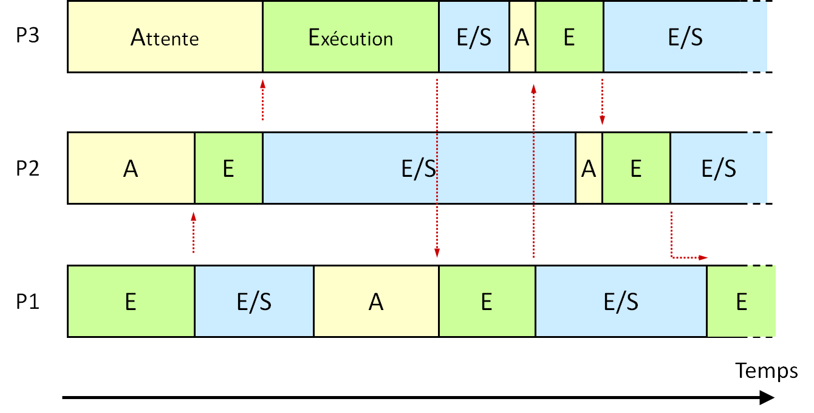Ordonnancement préemptif
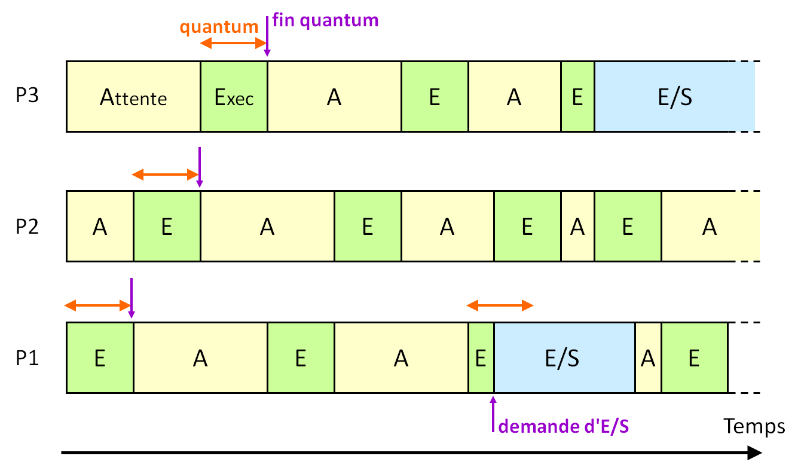De nombreuses stratégies
FIFO sans préemption
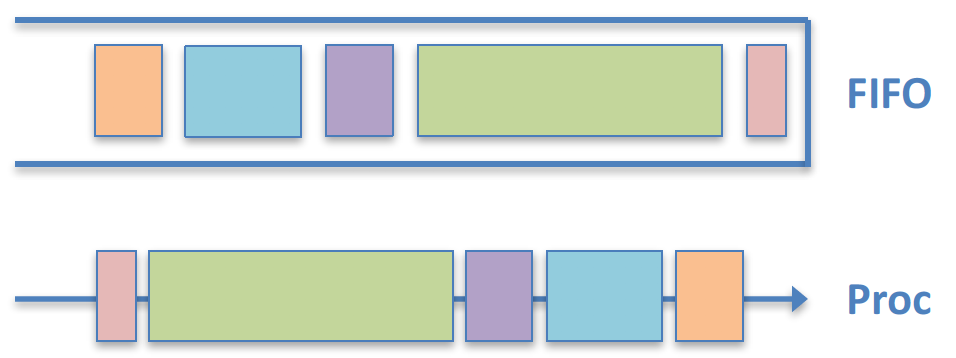
- Principe:
- premier arrivé, premier servi.
-
Avantages :
- Simple à implémenter
- Équitable dans l'ordre d'arrivée
-
Inconvénients :
- Peu efficace $\to$ des processus ont "longtemps" le processeur
- Peu réactif $\to$ des processus peuvent attendre longtemps
De nombreuses stratégies
Plus court d’abord
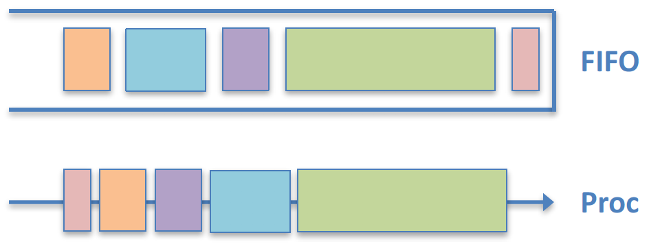
- Principe:
- priorité au processus le plus court
-
Avantages :
- Réactif: avantage aux petits processus
- Optimal sur le temps d'attente moyen
-
Inconvénients :
- Pas efficace: les processus ont moins le processeur s'il y a beaucoup d'E/S
- Non équitable: on peut avoir une famine des gros processus
De nombreuses stratégies
Round-Robin (FIFO préemptif)
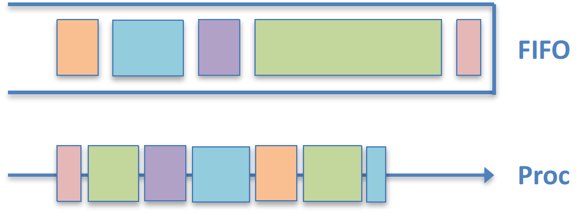
- Principe:
- FIFO avec quantum de temps
-
Avantages :
- Équitable: tout le monde
a le processeur - Réactif: les processus n'attendent pas
- Équitable: tout le monde
-
Inconvénients :
- Temps d'attente moyen plus élevé
- Beaucoup de commutations $\rightarrow$ surcoût!
De nombreuses stratégies
Files de priorités
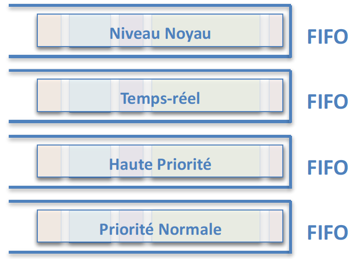
De nombreuses stratégies
Files de priorités dynamiques
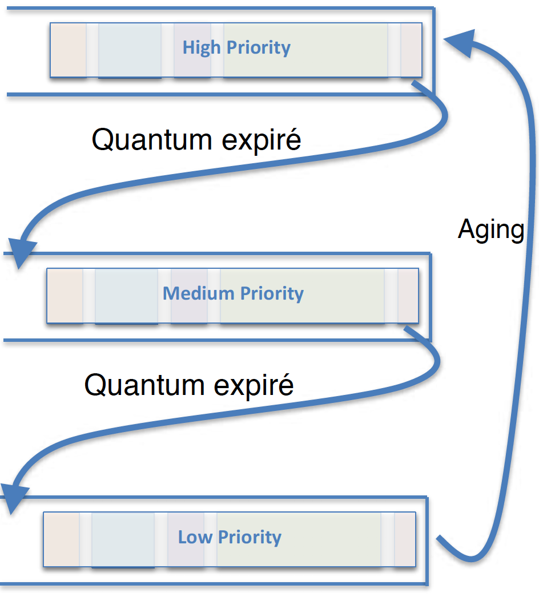
-
La priorité d’un processus peut être modifié par l’OS
- Par exemple sortie d’attente I/O
- Attente longue en file basse priorité
- Utilité : Windows NT, OS X, Linux
- Notion de classe de priorités
Exemple : Solaris
OS des machines Sun entre 1993 et 2000
- Principe
- Quantum de temps selon priorité (0 = priorité max)
- Priorité modifiée à la fin du quantum ou après une E/S
- Prioritaire $\rightarrow$ grand quantum
- Quantum consommé $\rightarrow$ priorité augmentée
- E/S $\rightarrow$ priorité diminuée
Exemple : Windows XP et après
- Principe
- Priorité + Round Robin
- Gérée au niveau des threads uniquement
- 32 niveaux de priorité
- Ordonnancement préemptif par niveau de priorité
-
Priorité dynamique
- Baissée à la fin du quantum
- Remontée après chaque E/S $\rightarrow$ interface graphique plus réactive!
- Priorité + Round Robin
Exemple : Linux, MacOS X
- Principe
- 2 algorithmes:
- Tâches temps réel: préemptif selon priorité, FIFO ou RR par priorité
- Autres tâches: temps partagé équitable
-
Système de crédits : chaque processus dispose d'un crédit = sa priorité
- Le processus le plus riche l'emporte (préemptif)
- Perte de 1 crédit à la fin du quantum
- Si aucun processus prêt n'a de crédit, tous les processus sont re-crédités
$\to$ $credit^{'}$ $=$ $credit/2$ $+$ $credit_{init}$
- 2 algorithmes:
Synthèse
- Un processus est un programme exécuté par un processeur
- L'OS stocke les informations sur les processus dans un PCB
- L'OS assure la consistance des données en mémoire
- Les threads partagent le code, l'environnement et le tas
- Ordonnancement $=$ choix d'un processus à exécuter
-
Algorithmes d'ordonnancement:
- FIFO
- Plus court d'abord
- Round-Robin